The usage of symmetry may substantially reduce the number of DFT runs required to obtain all elements of the FCM. The idea is the following:
For the given group  , all cell atoms can be split into ``orbits''
or ``stars'' of atoms,
, all cell atoms can be split into ``orbits''
or ``stars'' of atoms,  . Atoms within an orbit can be obtained
from each other by applying an appropriate symmetry operation
. Atoms within an orbit can be obtained
from each other by applying an appropriate symmetry operation  ;
atoms from different orbits cannot be related to each other in this
way. The idea is to find appropriate linear combinations of the atomic
displacements so that the number of degrees of freedom be reduced.
;
atoms from different orbits cannot be related to each other in this
way. The idea is to find appropriate linear combinations of the atomic
displacements so that the number of degrees of freedom be reduced.
This is done, first, by finding symmetry-adapted displacements for
each orbit separately:
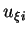
are atomic Cartesian displacements for all atoms belonging to the orbit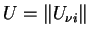
is a square matrix. This matrix can be constructed using the projection operator method well known in the group theory (see, e.g. Ref. [L. Kantorovich and Livshits- Phys. Stat. Sol. (b) 174 (1992) 79]). It can also be constructed as a unitary and real matrix. The latter property is obtained by combining 1D complex conjugate irreducible representation into a single real 2D representation, see details in the same paper. Thus, one can relate atomic displacements back to the symmetry-adapted ones via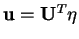
in the matrix form. Inserting these expansions into the energy expression (2.2), one obtains an important result:Therefore, the method works in the following way (again, for simplicity, the method of a single displacement is considered):
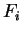
behave similarly to atomic displacements; therefore, from all one can obtain their symmetry-adapted counterparts using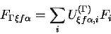
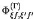
, can be obtained as explained in Section 2.6.8.1; note that the matrix does not depend on index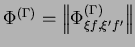
, one obtains squares of all phonon frequencies,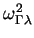
, for the given representation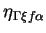
, can be turned into actual displacements via Eq. (2.7); thus, normal coordinates for each mode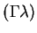
can be obtained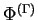
using the inverse to the Eq. (2.9) transformation: